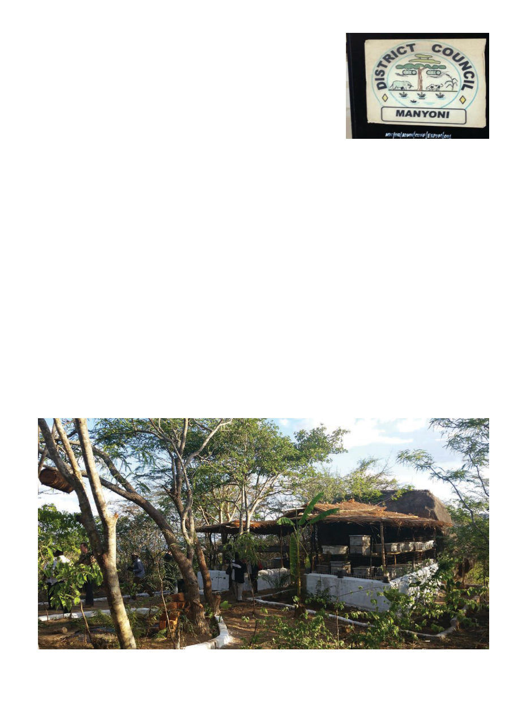

January 2021
97
tour three busloads of us spent three
days traveling Tanzania visiting dif-
ferent beekeeping sites. If you attend
a conference I strongly recommend
attending the technical tour, both for
the interesting sites you’ll visit, and
it’s also where I get to know fellow at-
tendees the best.
In contrast to West Africa, frame
hives were common and top bar hives
almost completely absent. Both frame
hives and traditional cylindrical wo-
ven hives were often hung from trees.
When on ground-level platforms,
hives were contained in fortress-like
cages against the avaricious honey
badger (who seemingly can scale
any fence). There is a long tradition
of beekeeping in East Africa and at
least one municipality we visited had
a traditional beehive on the town em-
blem. Outside the capital of Dodoma
we visited the Prime Minister’s farm,
where many well-made top bar hives
were housed in a series of stands.
At a few locations we were also
shown stingless (mellipona) hives,
which are small, and always in logs.
(It seems they retrieve logs found
with colonies, and will cut access
openings in them, but find rehousing
them into a man-made box unneces-
sary or counterproductive.) Later, on
the slopes of Kilimanjaro, I met a bee-
keeper with several hundred stingless
hives stacked around his house. I was
surprised the local environment could
support them since they only fly a few
hundred meters, but apparently it did!
Stingless bee honey is sold for a much
higher price than honey bee honey,
both because it’s only produced at a
fraction of the volume, and because
it’s believed to have medicinal value
(because it tastes like medicine!). It’s
not commonly believed to be shelf-
stable — suspected to have a high
enough water content to ferment —
though a bottle I bought appeared to
be in pretty good condition years later.
Returning home to California, I
continued to ponder the plight of the
Hadzabe and if I could find anyone
to help them. I contacted various aid
organizations but none appeared able
to take on another project in Tanzania.
Finally, I thought to myself, “This is
a worthy cause, I’ll raise money for it
myself!”
I formed the nonprofit Bee Aid In-
ternational and began fundraising.
This, it turns out, isn’t as easy as it
looks and/or I’m not very good at it.
The GoFundMe page earned a whop-
ping $60. Speaking at beekeeping
clubs was much more effective (spe-
cial thanks to the Los Angeles County
Beekeepers Association and Orange
County Beekeepers Association).
Speaking at Rotary Clubs was less
effective, only one of which (Mission
Viejo Rotary Club) supported me with
a donation as a result of presenting at
their meetings (and while I’m thank-
ing clubs I’d like to recognize the
more recent donations of the Ballarat
Beekeeping Club and Yarra Valley
Beekeeping Club, both in Australia).
I also found the collection of do-
nations a convenient solution to the
moral quandary of what to do when
people insisted they wanted to pay
me for “removing” a swarm I was
perfectly happy to collect for free.
“Oh, I wasn’t going to charge but if
you’d like to donate to a good cause
...” (which any one of you could also
do to raise funds for a charity ...).
By and by the date I had set for the
trip arrived, and I had raised a sig-
nificant chunk of money, though the
remaining costs would be made up
from my own pocket — at least I’m
comfortably safe from any accusa-
tions of profiting from the nonprofit.
To get to the Hadzabe, I flew into
Nairobi, Kenya (cheaper than Arusha),
took the bus across empty stretches of
savanna to Arusha, where I met up
with my interpreter (whom I’d met the
year before). From there we got a ride
with my contact, Dr. Kone, to Singida
town beside a lake filled with flamin-
A typical hive enclosure to protect against honey badgers. Note also hanging traditional hive on left.
Traditional hives on a municipal seal